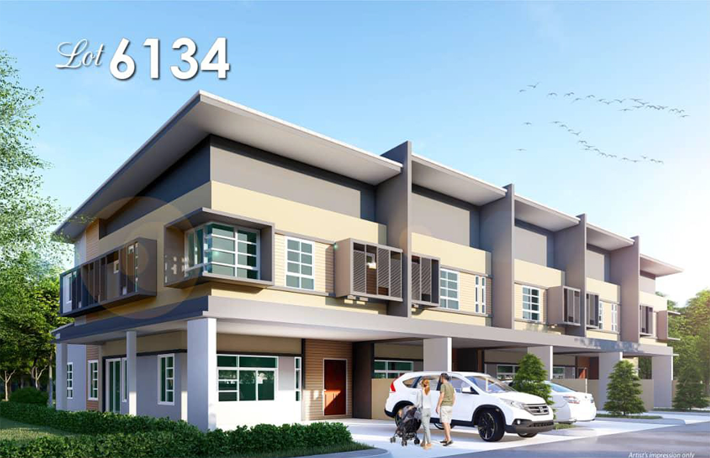
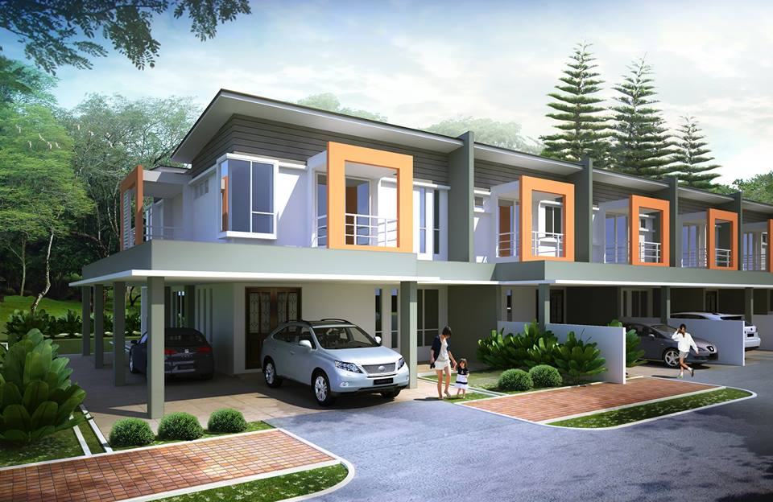

Building the future, one project at a time.
Based in Kuching, Sarawak, we are a passionate property development company dedicated to shaping vibrant and sustainable communities. With a strong focus on quality craftsmanship, innovative design, and long-term value, our developments are built to elevate lifestyles and meet the needs of modern homeowners. From affordable housing to premium residences, we strive to deliver projects that our buyers are proud to call home.

Elegant double-storey terrace homes nestled in the heart of Kuching's vibrant Jalan Sultan Tengah. Ideal for growing families seeking modern comfort and convenience.

Stylish and spacious homes located in Batu Kawa, offering serene surroundings and easy access to key amenities. Experience refined living in a secure gated community.
Email: info@propertydeveloper.com
Phone: (123) 456-7890